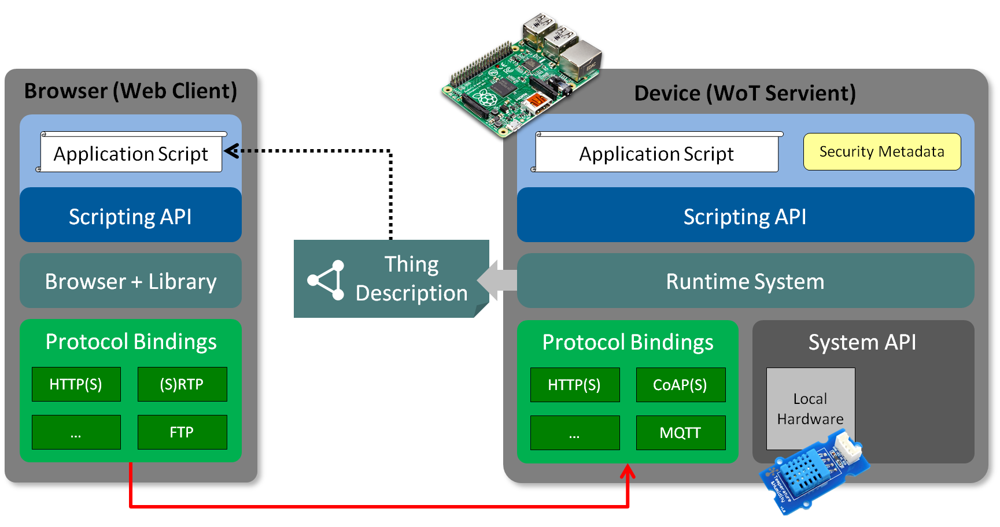

The W3C Web of Things (WoT) was created to enable
interoperability across IoT Platforms and application domains.
WoT provides mechanisms to formally describe IoT interfaces
to allow IoT devices and services to communicate with each other,
independent of their underlying implementation, and across multiple
networking protocols.
In addition WoT offers a standardized way to define and program IoT behavior.
This WoT Architecture document describes the abstract architecture for the W3C
Web of Things. It is derived from a set of requirements that were derived
from use cases for multiple application domains.
The architecture can be mapped onto a variety of concrete deployment scenarios,
several examples of which are given.
The document is focused on the
scope of W3C WoT standardization, which consists of three initial
building blocks. These are described by additional WoT
specifications:
The optional WoT Binding Templates can be used to describe
multiple protocol bindings, sothat a Thing can communicate
with different IoT Platforms (i.e., IoT ecosystems or standards).
The optional WoT Scripting API enables to implement the application logic
of a Thing using a standardized contract for JavaScript.
This simplifies IoT application development and enables
portability across vendors and WoT network components.
Other non-normative architectural blocks and conditions
underlying the Web of Things are also described in the context of
deployment scenarios. In particular, recommendations for security and
privacy are included, while the goal is to preserve and support
existing device mechanisms and properties. In general, W3C WoT is
designed to describe what exists rather than to prescribe what to
implement.
Please contribute to this draft using the GitHub
Issue feature of the WoT Architecture
repository. For feedback on security and privacy considerations,
please use the WoT
Security and Privacy Issues, as they are cross-cutting over all our
documents.
Introduction
The "Web of Things" (WoT) started as an academic initiative in the
form of publications and, starting in 2010, a yearly International Workshop on
the Web of Things . Its goal is to improve interoperability as well
as usability in the Internet of Things (IoT). With the increasing
role of IoT services using other web standards in commercial and
industrial applications, the W3C chartered an Interest Group in 2015 to
identify technological building blocks for Recommendation Track
standardization. With the WoT Working
Group chartered end of 2016, the first set of WoT building blocks has
now being standardized:
This document serves as an umbrella for the W3C WoT draft
specifications and defines the basics such as terminology and the
underlying abstract architecture of the W3C Web of Things. In
particular, the purpose of this document is to provide
a set of use cases that lead to the W3C WoT Architecture,
a set of requirements for WoT implementations,
an overview of the WoT building blocks being standardized
and their interplay,
a guideline to map the abstract architecture to software
stacks and hardware components,
and security considerations to be aware of when implementing
WoT building blocks.
Terminology
This section is normative.
This document uses the following terms as defined here. The WoT
prefix is used to avoid ambiguity for terms that are defined
specifically for Web of Things concepts.
Action
An Interaction Affordance that allows to invoke a function
of the Thing, which manipulates internal state that is not directly
exposed (cf. Properties) based on internal logic or triggers a
process on the Thing.
Application
A running or periodically running process that consumes one
or more Things (read and processes there data, control their state)
and/or exposes one or more Things (provide access to locally
gathered data or computed from consumed Things, provide remote
control and management interfaces). The application can be
implemented using the Scripting API or native platform APIs. The
application may also be distributed over multiple Things and other
hosts.
Binding Templates
A re-usable collection of blueprints for the communication
with different IoT platforms. The blueprints includes the required
vocabulary for the Thing Description to map Interactions to
platform-specific messages as well as implementation notes for the
required protocol stacks or dedicated communication drivers.
Client API
Programming interface that allows scripts to access remote
Things over the network, local Things in a different execution
environment, or directly attached hardware (which is abstracted as
Things).
to consume a Thing
To read a Thing Description and create a Consumed Thing
software object for the application in the local runtime
environment.
CoAP
Acronym for Constrained Application Protocol [[RFC7252]]
CWT
CBOR Web Token
Consumed Thing
A software object instance created through the WoT object of
the Scripting API that represents a remote Thing used by the local
application. It is defined by the ConsumedThing interface of the WoT
Scripting API.
Digital Twin
A digital twin is a virtual representation of a device or a
group of devices that resides on a cloud server or edge device. It
can be used to represent real-world devices which may not be
continuously online, or to run simulations of new applications and
services, before they get deployed to the real devices.
Discovery API
Programming interface that allows scripts to discover other
Things (local, nearby, or remote).
Domain-specific vocabulary
Linked Data vocabulary that can be used in the WoT Thing
Description, but is not defined by W3C WoT.
Event
An Interaction Affordance that describes asynchronous push
interactions initiated by the Thing.
Execution Environment
A sandbox within the Runtime that isolates scripts running
on the same Servient.
to expose a Thing
To create an Exposed Thing software object in the local
runtime environment that enables the application to provide local
state and calls as Interactions over the network.
Exposed Thing
A software object instance created through the Server API
that is implemented locally and can be accessed over the network by
remote WoT Clients. It is defined by the ExposedThing interface of
the WoT Scripting API.
Hypermedia Control
Hypermedia controls are Web links [[!RFC8288]] and request
templates where the latter can be seen as forms to fill in
and to send to servers.
Interaction Affordance
Metadata of a Thing exposing hypermedia controls that describe
the possible protocol-level choices to clients, thereby
suggesting how clients may interact with the Thing.
Examples use of affordances includes, but are not limited,
getting and setting properties, invoking actions,
and subscribing to events.
Interaction Model
An intermediate abstraction that formalizes the mapping from
application intent to concrete protocol bindings, which are used to
interact with Web resources.
IoT platform
A specific IoT ecosystem such as OCF, oneM2M, or Mozilla
Project Things with its own specifications for application-facing
APIs, data model, and protocols or protocol configurations.
JSON-LD
A JSON document that is augmented with support for Linked Data by
providing an
@context
property with a defining URI [[json-ld]].
JWT
JSON Web Token [[RFC7519]]
Local Discovery
A discovery method that can discover Things directly
connected to a Servient (e.g., sensor or actuator that is abstracted
as Thing).
Manual Discovery
A discovery method where the URI of the used consumed Thing
Descriptions is provided manually (e.g., through user configuration
or hard-coding in a script).
MQTT
Message Queuing Telemetry Transport is a
publish-subscribe-based messaging protocol.[[!MQTT]]
Nearby Discovery
A discovery method where the physical location is considered
(e.g., BLE, Audio Watermarking, ...).
Network Discovery
A discovery method that can discover Things in local
networks (e.g. SSDP, mDNS/DNS-SD, ...).
Property
An Interaction Affordance that exposes internal state of the
Thing that can be directly accessed (read) and optionally
manipulated (write).Things can also choose to make Properties
observable by pushing the new state after a change.
Protocol Binding
The set of mapping rules from an Interaction Affordance to
concrete messages of a specific protocol. These rules are encoded
into the TD using forms.
RDF
The Resource Description Framework (RDF) of the Semantic Web
[[rdf-concepts]]
Remote Discovery
A discovery method which supports lookup of remote Things
also beyond network boundaries, for instance by using a directory
service. The endpoint of the directory must be supported.
Server API
Programming interface that allows scripts to expose local
functionality as Things to WoT Clients.
Servient
A software stack that implements the WoT building blocks. A
Servient can host and expose Things (server role) and/or consume
Things (client role). Servients usually have multiple Protocol
Bindings to enable interaction with different platforms.
Subprotocol
An extension mechanism to a transfer protocol that must be
known to interact successfully.
TD
Short for Thing Description.
TD Vocabulary
A controlled Linked Data vocabulary by W3C WoT to tag the
metadata of Things in the WoT Thing Description including
communication metadata of WoT Binding Templates.
Thing
An abstraction of a physical or a virtual entity whose
metadata and interfaces are described by a WoT Thing Description,
whereas a virtual entity is the composition of one or more Things.
Thing Description
Structured data describing a Thing. A TD includes metadata,
domain-specific metadata, a list of offered interactions, the
supported protocol bindings for each interaction, and links to
related Things. The Thing Description is built around a formal
Interaction Model.
Thing Directory
A directory service for TDs that provides a Web interface to
register TDs (see [[CoRE-RD]]) and look them up (e.g., using SPARQL
queries or CoRE Link Format).
Transfer Protocol
The underlying, standardized application layer protocol
without application-specific options or subprotocol mechanisms.
WoT
The Web of Things initiative and family of specifications in
the W3C.
WoT Client
An entity that can connect with a network interface
described by a WoT Thing Description (i.e., consume a Thing). WoT
Clients usually implement multiple Protocol Bindings. WoT Client is
also used to refer to a Servient in client role only.
WoT Interface
The WoT Interface is the network-facing interface that is
described by a TD. This requires the mapping rules of Protocol
Bindings between the abstract WoT Runtime (Thing level) to a
network-facing interface (protocol level).
WoT Object
The WoT object is the Scripting API entry point within a WoT
Runtime. It provides methods to discover, consume, and expose
Things.
WoT Runtime
A runtime system for application scripts with the WoT
Scripting API. Implementing a WoT Runtime is optional for Servients.
The WoT Runtime should be the component that instantiates Consumed
Things and Exposed Things as software objects, manages their state,
and generates the TDs. It communicates with other components such as
the Binding implementations and application scripts (the WoT
Scripting API being one way).
Scripting API
The application-facing programming interface provided by a
Servient; comparable to the Web browser APIs. It is an API provided
to ease the implementation of, or to extend a WoT Runtime.
WoT Server
An entity that exposes a network interface consistent with a
WoT Thing Description. WoT Server is also used to refer to a
Servient in server role only.
Use Cases
This section presents the application domains and use cases targeted
by the W3C WoT and which are used to derive the abstract architecture
discussed in .
The Web of Things architecture does not put any limitations on
use cases and application domains. Various application domains have
been considered to collect common patterns that have to be satisfied
by the abstract architecture.
The following sections are not exhaustive. Rather they serve as
illustrations, where connected things can provide additional benefit
or enable new scenarios.
Application Domains
Consumer
In the consumer space there are multiple assets that benefit from
being connected. Lights and air conditioners can be turned off based
on room occupancy. Window blinds can be closed automatically based
on weather conditions and presence. Energy and other resource
consumption can be optimized based on usage patterns and
predictions.
The consumer use cases in this section includes Smart Home use case.
shows an example of a Smart Home.
In this case, gateways are connected to edge devices such
as sensors, cameras and home appliances through corresponding
local communication protocols such as KNX, ECHONET, ZigBee,
DECT ULE and Wi-SUN. Multiple gateways can exist in one home,
while each gateway can support multiple local protocols.
Gateways can be connected to the cloud through the internet,
while some appliances can be connected to the cloud directly.
Services running in the cloud collect data from edge devices and
analyze the data, then provide value to users through the edge
devices and other UX devices.
Smart Home
Smart home provides consumer benefits such as remote access and
control, voice control and home automation. Smart home also enables
device manufacturers to monitor and maintain devices remotely. Smart
home can realizes added value services such as energy management and
security surveilance.
Industrial
The industrial use cases in this section are applicable to
different industry verticals. Due to the nature of overlaps
in the application scenarios, different verticals have similar use
cases.
Example: Smart Factory
shows an example of a Smart Factory.
In this case, cell controllers automate factory equipment with
specialized communication such as RS-485 or EtherCAT. Line
controllers orchestrate multiple cell controllers over IP-based
networks. A factory controller integrates different line
controllers. A cloud service collects data from the factory
controller and analyzes them for predictive maintenance. Users can
monitor the factory through a dashboard. Note that factories
usually do not reveal the internal topology of their lines and
cells.
Smart Factory
Smart factories require advanced monitoring of the connected
manufacturing equipment as well of the manufactured products. They
benefit from predictions of machine failures and early discovery of
anomalies to prevent costly downtime and maintenance efforts.
Additionally, monitoring of connected manufacturing equipment
and the environment at the production facility for the presence of
poisonous gases, excessive nois or heat increases the safety of the
workers and reduces the risks of incidents or accidents.
Real-time monitoring and KPI calculations of production
equipment helps to detect productivity problems and optimize the
supply chain.
Transportation & Logistics
Monitoring of vehicles, fuel costs, maintenance needs and
assignments helps to optimize the full utilization of the vehicle
fleet.
Shipments can be tracked to be en-route to ensure consistent
quality and condition of the transported goods. This is especially
useful to assert the integrity of the cold-chain from warehouses to
refrigerated trucks to delivery.
Centralized monitoring and management of stock in warehouses
and yards can prevent out of stock and excessive stock situations.
Utilities
Automated reading of residential and C&I (Commercial and
Industrial) meters, and billing offers continuous insights into
resource consumption and potential bottlenecks.
Monitoring the condition and output of distributed renewable
energy generation equipment enables optimisation of distributed
energy resources.
Monitoring and remote-controlling of distribution equipment
helps to automate the distribution process.
Continuous monitoring of generation and distribution
infrastructure is improving safety of utilities crew in the field.
Oil and Gas
Offshore platform monitoring, leakage detection and
predicition of pipelines as well as monitoring and controlling the
levels in tanks and reservoirs helps to improve the industrial
safety for the workforce as well as for the environment.
Automated calculation of a distributed stock through various
storage tanks and delivery pipes/trucks allows for improved
planning and resource optimisation.
Insurance
Proactive Asset Monitoring of high value assets such as
connected structures, fleet vehicles, etc. mitigates the risk of
severe damage and high costs due to predictions and early detection
of incidents.
Usage based insurance can be offered with usage tracking and
customized insurance policies.
Predictive weather monitoring and re-routing fleet vehicles
to covered garages can limit loss due to hail damage, tree damage.
Engineering and
Construction
Monitoring for industrial safety reduces the risks of
security hazards. Monitoring of assets at construction site can
prevent damage and loss.
Agriculture
Soil condition monitoring and creating optimal plans for
watering, fertilizing as well as monitoring the produce conditions
optimize the quality and output of agricultural produce.
Healthcare
Data collection and analytics of clinical trial data helps to
gain insights into new areas.
Remote patient monitoring mitigates the risk of undetected
critical situations for elderly people and patients after
hospitalization.
Environment Monitoring
Environment monitoring typically relies on a lot of
distributed sensors that send their measurement data to common
gateways, edge devices and cloud services.
Monitoring of air pollution, water pollution and other
environmental risk factors such as fine dust, ozone, volatile
organic compound, radioactivity, temperature, humidity to detect
critical environment conditions can prevent unrecoverable health or
environment damages.
Smart Cities
Monitoring of Bridges, Dams, Levees, Canals for material
condition, deterioration, vibrations discovers maintenance repair
work and prevents significant damage. Monitoring of highways and
providing appropriate signage ensures optimized traffic flow.
Smart Parking is optimizing and tracking the usage and
availability of parking spaces and automates billing/reservations.
Smart control of street lights based on presence detection,
weather predictions, etc reduced cost.
Garbage containers can be monitored to optimize the waste
management and the trash collection route.
Smart Buildings
Monitoring the energy usage throughout the building helps to
optimize resource consumption and reduce waste.
Monitoring the equipment in the buildings such as HVAC,
Elevators, etc. and fixing problems early improves the satisfaction
of occupants.
Connected Car
Monitoring of operation status, prediction of service needs
optimizes maintenance needs and costs. Driver safety is enhanced
with notifications of an early warning system for critical road and
traffic conditions.
Connected Car Example
shows an example of a Connected Car.
In this case, a gateway connects to car components through CAN and
to the car navigation system through a proprietary interface.
Services running in the cloud collect data pushed from car
components and analyze the data from multiple cars to determine
traffic patterns. The gateway can also consume cloud services, in
this case, to get traffic data and show it to the driver through
the car navigation system.
Connected Car
Monitoring of operation status, prediction of service needs
optimizes maintenance needs and costs. Driver safety is enhanced
with notifications of an early warning system for critical road and
traffic conditions.
Common Patterns
This section introduces common use case patterns that illustrate how
devices/things interact with controllers, other devices, agents and
servers.
Device Controllers
The first use case is a local device controlled by user-operated
remote controller as depicted in .
For example, A remote controller can access an electronic appliance
through the local home network directly. In this case, the remote
controller can be realized by a browser or native application.
In this pattern, at least one device like the electronic
appliance have a server role that can accept the request from the
other devices and respond them, and sometimes start to initiate
mechanical function of it. The another device like the remote
controller have a client role that can issue a message to the other
with some requests, like to get sensor value or to turn it on.
Device Control
Thing-to-Thing
shows an example of direct
Thing-to-Thing interaction. The scenario is as follows: a sensor
detects the change of the room condition, for example the
temperature surpassing a set threshold, and issues a control message
like "turn on" to the electronic appliance. The sensor unit can
issue some trigger messages to other devices.
In this case, when two devices that have server roles are
connected, at least one device must have also a client role that
issues a message to the other to actuate.
Control Agent
Remote Access
Must rewrite for remote
access/control use case. Include changing uplink connectivity.
The third use case is a mobile remote controller (e.g., on a
smartphone) as shown in . The remote
controller can switch communication media between cellular network
and home network such as Wi-Fi and Bluetooth. The controller choose
the home network when it's at home, and the cellular while outside.
In this pattern, the remote controller and the electronic
appliance have a client role and a server role respectively as the
same as 3.2.1 device controllers.
Multiple Network Interfaces
Gateways
Must rewrite for local box/compute
node use case.
shows a use case based on a Smart
Home gateway. A smart home gateway is placed between a home network
and the Internet. The gateway manages electronic appliances inside
the house and can receive commands from a remote controller over the
Internet, e.g., from a smartphone as in the previous use case. It is
also is a virtual representation of a device. The gateways sometimes
are called the proxies.
In this pattern, the home gateway have both of client and
server roles. That is, it can connect to the electronic appliance
with the client role and to the remote controller with the server
role.
Smart Home Gateway
Digital Twins
A digital twin is a virtual representation, i.e. a model of a
device or a group of devices that resides on a cloud server or edge
device. It can be used to represent real-world devices which may not
be continuously online, or to run simulations of new applications
and services, before they get deployed to the real devices.
Digital Twin
Digital twins can model a single device, or they can aggregate
multiple devices in a virtual representation of the combined
devices.
Digital Twin for Multiple Devices
Digital twins can be realized in different ways, depending on
whether a device is already connected to the cloud, or whether it is
connected to a gateway, which itself is connected to the cloud.
Cloud-ready Devices
shows an example where electronic
appliances are connected directly to the cloud. The cloud mirrors
the appliances and, acting as a digital twin, can receive commands
from remote controllers (e.g., a smartphone). Authorized
controllers can be located anywhere, as the digital twin is
globally reachable.
Appliance twin for a Cloud-ready Devices
Legacy Devices
The third use case is a mobile remote controller (e.g., on a
smartphone) as shown in . The
remote controller can switch communication media between cellular
network and home network such as Wi-Fi and Bluetooth. The
controller choose the home network when it's at home, and the
cellular while outside.
In this pattern, the remote controller and the electronic
appliance have a client role and a server role respectively as the
same as 3.2.1 device controllers.
Multiple Network Interfaces
Gateways
Must rewrite for local
box/compute node use case.
shows a use case based on a
Smart Home gateway. A smart home gateway is placed between a home
network and the Internet. The gateway manages electronic appliances
inside the house and can receive commands from a remote controller
over the Internet, e.g., from a smartphone as in the previous use
case. It is also is a virtual representation of a device. The
gateways sometimes are called the proxies.
In this pattern, the home gateway have both of client and
server roles. That is, it can connect to the electronic appliance
with the client role and to the remote controller with the server
role.
A Digital Twin for a Legacy Device
Multi-Cloud
Typical IoT deployments consist of multiple (thousands) of
devices. Without a standardized mechanism, the management of
firmware updates for specific clouds require a lot of effort and
hinders wider scale IoT adoption.
The primary benefit of a standardized mechanism for describing
devices and device types is the capability of deploying devices to
different cloud environments without the need of doing customization
at device software / firmware level, i.e. installing cloud specific
code to a device. This implies that the solution is flexible enough
to describe devices in a way that allows on-boarding and using
devices in multiple IoT cloud environments.
This drives adoption of Web of Things devices, since it
enables easy usage of new devices in an existing deployment, as well
as migration of existing devices from one cloud to the other.
Cross-domain Collaboration
show an example of a Cross-domain
collaboration. In this case, each system involves other systems in
other domains, such as Smart Factrory with Smart City, Smart City
with Smart Home. This type of system is called "Symbiotic"
ecosystem, as shown in [[IEC-FOTF]]. There are two collaboration
models: direct collaboration and indirect collaboration. In the
direct collaboration model, systems exchange their own information
directly with each other in peer-to-peer manner. In the indirect
collaboration, systems exchange their own information via some
collaboration platform. In order to maintain and continue this
collaboration, each system provide the metadata of their ability and
interfaces and adopt itself to others.
Cross-domain collaboration
Summary
The following figure has to be
simplified to only show the abstract patterns without the
implementation and WoT details (inside the gray boxes). Instead,
common patterns can be listed at the corresponding places.
The possible architecture patterns are described in the previous
section. In these patterns, some entities such as the devices
including the existing devices, the controllers, the gateways, and
the clouds are located on some places such as inside building,
outside buildings, and data centers.
is an integrated overview. To specify the differences of the
entities, each entities shown in the patters is tied to each of
functional roles such as a server, a client and a proxy/gateway. That
is, the client corresponds to the application or the controller, and
the server dose to the device. The proxy/gateway is an entity that
relays the connection of the client and the server. The gateway is
sometimes distinguished from the proxy because of having the protocol
converter functionality when it's connected to the existing devices.
Use Case Overview
Requirements
The requirements have to be
reviewed, partly merged, and sorted into the proper category
(functional vs technical).
Functional Requirements
This section defines the properties required in an abstract
Web of Things (WoT) architecture.
Common Principles
WoT architecture should enable mutual interworking of
different eco-systems using web technology.
WoT architecture should be based on the web architecture
using RESTful APIs.
WoT architecture should allow to use multiple payload
formats which are commonly used in the web.
Flexibility
There are a wide variety of physical device configurations
for WoT implementations. The WoT abstract architecture should be
able to be mapped to and cover all of the variations.
Compatibility
There are already many existing IoT solutions and ongoing
IoT standardization activities in many business fields. The WoT
should provide a bridge between these existing and developing IoT
solutions and Web technology based on WoT concepts. The WoT
should be upwards compatible with existing IoT solutions and
current standards.
Scalability
WoT must be able to scale for IoT solutions that
incorporate thousands to millions of devices. These devices may
offer the same capabilites even though they are created by
different manufacturers.
Interoperability
WoT must provide interoperability across device and cloud
manufacturers. It must be possible to take a WoT enabled device
and connect it with a cloud service from different manufacturers
out of the box.
Thing functionalities
WoT architecture should allow thing's to have
functionalities such as
reading thing's status information
updating thing's status information which might cause
actuation
subscribing to, receiving and unsubscribing to the
notification of the change of thing's status information.
invoking functions with input and output parameters
which would cause certain actuation or calculation.
subscribing to, receiving and unsubscribing to the
notification which does not directly relate to thing's status
information.
Search and discovery
WoT architecture should allow clients to know thing's
attributes, functionalities and their access points, prior to
access to the thing itself.
WoT architecture should allow clients to search things by
its attributes and functionalities.
WoT architecture should allow semantic search of its
functionalities based on unified vocabulary, regardless of naming
of its functionalities.
Description mechanism
WoT architecture should support common description
mechanism which enables describing things and their functions.
Such description should be not only human-readable, but
also machine-readable.
Such description should allow semantic annotation of its
structure and described contents.
Such description should be able to be exchanged using
multiple formats which are commonly used in the web.
Description of attributes
WoT architecture should allow describing thing's
attributes such as
name
explanation
version of spec, format and description itself
links to other related things and information
Such description should support internationalization.
Description of functionalities
WoT architecture should allow describing thing's
functionalities which is shown in ## Thing functionalities
Network
WoT architecture should support multiple web protocols
which are commonly used.
Such protocols include 1)protocols commonly used in the
internet and 2)protocols commonly used in the local area network
WoT architecture should allow using multiple web protocols
to access to the same functionality.
WoT architecture should allow using mixture of multiple
protocols to the functionalities of the same thing (e.g. HTTP and
WebSocket).
Deployment
WoT architecture should support wide variety of thing
capability such as edge devices with resource restrictions and
virtual things on the cloud, based on the same model.
WoT architecture should support multiple levels of thing
hierarchy with intermediate entities such as gateways and proxies.
WoT architecture should support accessing things in the
local network from the outside of the local network (the internet
or other local network), considering network address translation.
Application
WoT architecture should allow describing applications on
the wide variety of things such as edge device, gateway, cloud and
UI/UX device, using web standard technology based on the same
model.
Legacy adaption
WoT architecture should allow mapping of legacy IP and
non-IP protocols to web protocols, supporting wide variety of
hierarchy, where such legacy protocols are terminated and
translated.
WoT architecture should allow transparent use of existing
IP protocols without translation, which follow RESTful
architecture.
Technical Requirements
The previous section delineated the Web of Things abstract
architecture by showing various use cases and enumerating patterns
for combining architectural components. This section describes
technical requirements derived from the abstract architecture.
Components consisting Web of Things and the Web of Things
architecture
Observation of the use cases shows that basic components such
as devices, applications that access and control those devices,
proxies (e.g. gateways and platforms) that sit between devices and
applications to link them together, directories that provides
device search functionality are required.
Those components are connected to the internet or field
networks in offices, factories or other facilities. Note that all
components involved may be connected to a single network in some
cases, however, components can be deployed across multiple networks
in general.
Devices
Access to devices are made based on descriptions of their
functions and interfaces (i.e. Thing Description). Those include
general description about devices, information models representing
functions, transport protocol description for operating on
information models, and security information, and so on.
General descriptions are about device identifiers (URI) and
other human readable information. Information models defines device
attributes, and represent devices internal settings, control
functionality and notification functionality. Devices that have the
same functionality have the same information model regardless of
the transport protocols used.
Because many systems based on Web of Things architecture are
crossing system Domains, vocabularies and meta data (e.g.
ontologies) used in information models should be commonly
understood by involved parties. In addition to REST transports,
PubSub transports are also supported.
Security information includes descriptions about
authentication, authorization and secure communications. Devices
are required to put TDs either inside them or at locations external
to the devices, and to make TDs accessible so that other components
can find and access them.
Applications
Applications need to generate and utilize program interfaces
internally based on device descriptions (i.e. TD).
Applications have to be able to obtain device descriptions
(i.e. TD) through the network, therefore, need to be able to
conduct search operation and acquire the necessary TD over the
network.
Twins
Twins need to generate program interfaces internally based on
device descriptions (i.e. TD), and to represent virtual devices by
using those program interfaces. A twin has to produce a TD for the
virtual device and make it externally available.
Identifiers of virtual devices need to be newly assigned,
therefore, are different from the original devices. This makes sure
that virtual devices and the original devices are clearly
recognized as separate entities. Transport and security mechanisms
and settings of the virtual devices can be different from original
devices if necessary. Virtual devices are required to have TDs
provided either directly by the twin or to have them available at
external locations. In either case it is required to make the TDs
available so that other components can find and use the devices
associated with them.
Discovery
For TDs of devices and virtual devices to be accessible from
devices, applications and twins, there needs to be a common way to
share TDs. Directories can serve this requirement by providing
functionalities to allow devices and twins themselves automatically
or the users to manually register the descriptions.
Descriptions of the devices and virtual devices need to be
searchable by external entities. Directories have to be able to
process search operations with search keys such as keywords from
the general description in the device description or information
models.
Security
Security information related to devices and virtual devices
needs to be described in device descriptions. This includes
information for authentication/authorization and payload
encryptions.
WoT architecture should support multiple security mechanism
commonly used in the web, such as Basic, Digest, Bearer and
OAuth2.0.
WoT Architecture
This section is normative.
Overview
Abstract Architecture of W3C WoT
High-level architecture
Overview of WoT components behavior is explained using a
couple of system configuration diagrams. First, shown below is a
configuration that consists of a device and an application shown
below.
High level architecture of application and
device
Functions of a device is described by a Thing Description
(TD). A TD describes, among other things, a devices identifier,
functions and attributes of a device implemented internally,
communication protocols (i.e. transport layer) information. Details
of TD format are defined the Thing Description specification.
Each Web of Things device MUST have a corresponding TD.
Applications can recognize a device by obtaining a TD of the device.
Conceptually, a device can be thought to have an ExposedThing that
provides an interface that conforms to the TD. On the other hand, an
application can be conceptually considered to have a ConsumedThing
that provides an interface functionality for an application to
utilize. An application can generate a ConsumedThing upon a receipt
of a TD. Communication between an application and a device are
realized by ConsumedThing and ExposedThing connect to each other and
exchange messages.
Next, in the below configuration, an application and a device
connect to each other via a proxy.
Need to adapt this chapter to use digital twin terminology
instead of proxy.
High level architecture with proxyHigh level architecture with proxy
A proxy contains both ExposedThing and ConsumedThing
functionality, and relay messages that are exchanged between an
application and a device. In a proxy, a ConsumedThing creates a
shadow of the device, and an application can access the shadow
device through the proxys ExposedThing.
Proxys ExposedThing and ConsumedThing can communicate in
different protocols. For example, a device and an application can
use separate protocols, CoAP and HTTP, respectively. Even when there
are multiple devices and they use different protocols, an
application can communicate with those devices using a single
protocol through the proxy. The same is true for device
authentication. An application only need to handle a single
authentication method even when multiple devices connected to a
proxy use different authentication methods.
A proxy creates a ConsumedThing based on a TD and generates
another TD for a shadow device. The TD for a shadow device uses a
new identifier different from the original device TDs, and changes
communication protocols if necessary. A proxy then creates an
ExposedThing that serves as the Thing for the TD. An application
communicates with a device via a proxy through a ConsumedThing that
works according to the TD for the shadow device.
Web Thing
Should the WoT documents consistently refer to Web Thing
instead of just Thing?
A simple example is a Thing being the digital representation
of a physical IoT devices, which also directly provides the
interface for interaction. A Thing may also be hosted on a gateway
or the cloud, representing a physical entity with which clients
cannot communicate diretly (e.g., a legacy device) or not all (e.g.,
a room or table). Virtual entities like a room are often represented
by a composition of one or more sensors and actuators, each of which
may also be available as an individual Thing.
A Thing in the Web of Things is the abstraction of a physical
or a virtual entity whose metadata and interfaces are described by a
WoT Thing Description. A virtual entity is the composition of one or
more Things.
A simple example is a Thing being the digital representation
of a physical IoT devices, which also directly provides the
interface for interaction. A Thing may also be hosted on a gateway
or the cloud, representing a physical entity with which clients
cannot communicate diretly (e.g., a legacy device) or not all (e.g.,
a room or table). Virtual entities like a room are often represented
by a composition of one or more sensors and actuators, each of which
may also be available as an individual Thing.
The interface of a Thing must follow the interaction model of
the WoT Architecture. However, Things may only consist of
metadata without offering an interface for interaction.
Architectural Aspects of a Web Thing
The use cases and the requirements discussed result in an abstract model of
a Thing that has four architectural aspects of interest: its behavior, its interaction affordances,
the mapping of those affordances to concrete protocols (what we call the Protocol Binding),
and its security configuration.
The behavior aspect includes both lifecycle management (onboarding, updating, decommissioning, etc) but
also the operational behavior of the Thing, which can include both autonomous behavior and support
for interactions. The interaction affordances are an abstract model of the network API in terms
of properties, actions, and events, but without reference to a specific network protocol or
payload encoding. The protocol binding adds the additional detail needed to map each
affordance to a particular concrete protocol.
In general, different protocols may be used to support different subsets of affordances
even within a single Thing.
The security configuration aspect represents the mechanisms used to
control access to the affordances and the management of related public and private metadata.
shows these aspects in a diagram.
Architectural Aspects of a Thing
Interaction Model
Originally, a Web resource usually represented a document on
the World Wide Web that can simply be fetched by a client. With the
introduction of Web servives, resources became more generic
interaction endpoints that can implement any kind behavior. This
very high level of abstraction makes it hard to provide a loose
coupling between applications and the manifold interaction
possibilities of resources. As a result, typical API descriptions
consist of a static mapping from an application intent to a resource
address, method, request payload structure, response payload
structure, and expected errors.
The interaction model of WoT introduces an intermediate
abstraction that formalizes the mapping from application intent to
concrete protocol bindings, which are used to interact with Web
resources. Instead of generic resources, WoT applications use three
types of so-called Interaction Affordances: Properties, Actions, and
Events. While constraining Web resources into three different
behaviors, the three types are still able to cover virtually all
functionality found in IoT devices and services.
Interaction Affordances
The term affordance originates in ecological psychology, but
was adopted in the field of Human-Computer Interaction [[?HMI]]
based on the definition by Donald Norman: "'Affordance' refers to
the perceived and actual properties of the thing, primarily those
fundamental properties that determine just how the thing could
possibly be used." [[?NORMAN]]
The hypermedia principle that is one of the bedrock foundations of
the REST [[?REST]] principle demands that any piece of information
available on the Web be linked to other pieces of information so that
the consumer of the information gets explicit knowledge about how to
navigate the Web and control Web applications. The simultaneous
presentation to Web clients of information and control, provided in
the form of hyperlinks, is a mechanism that affords clients the means
to drive Web applications. In this context, an affordance is the
description of a hyperlink (e.g. via a link relation type or link
target attributes) suggesting clients how to act on the linked resource.
Drawn from this hypermedia principle, the Web of Things defines
Interaction Affordances as metadata of a Thing exposing
hypermedia controls that describe the possible protocol-level
choices to clients, thereby suggesting how clients may interact
with the Thing.
Examples use of affordances includes, but are not limited,
getting and setting properties, invoking actions,
and subscribing to events.
This definition
is thereby aligned with HCI and interaction designers, who create
physical Things, as well as the REST and microservice community
working on Web services in general.
Please comment if the Interaction Affordances
should be defined using normative langauge. Note that this document
provides the abstract concept, while the WoT Thing Description
document defines concrete classes within an information model.
Properties
A Property is an Interaction Affordance that exposes internal
state of the Thing that can be directly accessed (read) and
optionally manipulated (write). Things can also choose to make
Properties observable by pushing the new state after a change (cf.
CoAP Observe [[?RFC7641]]).
Properties may contain one data schema if the data is not
fully specified by the Protocol Binding used (e.g., through a Media
Type).
Examples of Properties are sensor values (read-only),
stateful actuators (read-write), configuration parameters
(read-write), Thing status (read-only), or computation results
(read-only).
Actions
An Action is an Interaction Affordance that allows to invoke
a function of the Thing, which manipulates internal state that is
not directly exposed (cf. Properties) based on internal logic or
triggers a process on the Thing.
Actions may contain up to two data schemas, one for optional
input parameters, one for output results, if the data is not fully
specified by the Protocol Binding used (e.g., through a Media
Type).
Examples of Actions are changing multiple Properties
simultaneously, changing Properties over time or with a process
that shall not be disclosed, or invoking a long-lasting process
such as actuator control.
Events
An Event Interaction Affordance describes asynchronous push
interactions initiated by the Thing. Here not state, but state
transitions (i.e., events) are communicated. Events may betriggered
through conditions that are not exposed as Properties.
Events may contain up to three data schemas, one for the
event data and optionally one for the subscription data and/or one
for the cancellation data, if the data is not fully specified by
the Protocol Binding used (e.g., through a Media Type).
Examples of Events are discrete events such as an alarm or
samples of a timeseries that are pushed regularly.
Hypermedia Controls
Interaction Affordances showing the possible choices to
clients must originate from the Thing itself and are shared during
discovery or in-band during the interaction with the Thing. This is
opposed to out-of-band interface descriptions that need to be
preinstalled or hardcoded into clients (e.g., RPC, WS-* Web
services, HTTP services with fixed URI-method-response definitions).
To suggest how clients may interact with the Thing, WoT makes
use of hypermedia controls known from REST. Besides the
well-established Web links [[!RFC8288]], WoT defines the concept of
Web forms. They allow to adapt to the diverse choices with which
clients are faced in the Internet of Things [[?FORMS]].
Links
Web links enable clients to change the current context (e.g., the
set of resource representations currently rendered in the Web
browser) or to include further resources in the current context,
depending on the relation between context and link target. Clients
do so by dereferencing the target URI, that is, fetching the
resource representation.
A link is comprised of a link context, relation type, target, and
optionally target attributes The underlying model for the
relationships between resources on the Web (i.e., links) is defined
in [[!RFC8288]]. link relation types are either IANA-registered
tokens adhering to the ABNF
LOALPHA *( LOALPHA /
DIGIT / "." / "-" )
(e.g.,
stylesheet
) or extension types in form of absolute URIs. [[!RFC8288]]
In the Web of Things, links are used for discovery and to
express relations between Things (e.g., hierarchical or functional)
and relations to other documents on the Web (e.g., manuals or
alternative representations such as CAD models).
Forms
Forms enable clients to perform interactions that go beyond
dereferencing a URI such as manipulating resource state at the
server. This usually requires more detailed information about the
necessary request such as the method and header fields or protocol
options. Forms can be seen as a request template, where the server
prefilled part of the information according to its own interface
and left parts blank to be filled by the client.
In the Web of Things, a form provides instructions to perform
an operation on a resource and is comprised of:
a form context,
a submission target,
an operation type,
a request method, and
optionally form fields
A form can be viewed as a statement of "To perform a
operation type
operation on
form context
, make a
request method
request to
submission target
" where form fields may further describe the required request.
Form contexts and submission targets are both
Internationalized Resource Identifiers (IRIs) [[!RFC3987]].
However, in the common case, thay will also be URIs [[!RFC3986]],
because many protocols (such as HTTP) do not support IRIs.
Form context and submission target may point to the same
resource or different resources, where the submission target
resource implements the operation for the context resource.
The operation type identifies the semantics of the operation.
Operation types are denoted similar to link relation types:
Well-known
operation types MUST have a name that follows the ABNF LOALPHA *( LOALPHA / DIGIT /
"." / "-" ).
Names
MUST be compared character by character in a case-insensitive
fashion. The well-known operation types for the Web of Things
defined by this specification are given in the following table.
Extension
operation types MAY be chosen by applications.Extension
operation type names MUST be absolute URIs [[!RFC3986]] that
uniquely identify the type.
Well-known Operation Types for the Web of Things
Operation Name
Description
readproperty
Identifies the read operation on Property Affordances to
retrieve the corresponding data.
writeproperty
Identifies the write operation on Property Affordances
to update the corresponding data.
observeproperty
Identifies the observe operation on Property Affordances
to be notified with the new data when the Property was updated.
invokeaction
Identifies the invoke operation on Action Affordances to
perform the corresponding action.
subscribeevent
Identifies the subscribe operation on Event Affordances
to be notified by the Thing when the event occurs.
unsubscribeevent
Identifies the unsubscribe operation on Event
Affordances to stop the corresponding notifications.
As of this specification, the well-known
operation types form a fixed set that results from the WoT
interaction model. Other specifications may define further
well-known operation types that are valid for their respective
document format or form serialization. Updates to this
specification may set up an IANA registry in the future to enable
extensibility and a more generic Web form model that may be applied
beyond WoT specifications.
The request method MUST identify one method of the standard
set of the protocol identified by the submission target URI scheme.
Form fields may further specify the request expected by the
server for the given operation. Form fields may depend on the
protocol used for the submission target. Examples are HTTP header
fields, CoAP options, the protocol-independent Media Type(s) for
the submission payload, or information about the expected response.
Protocol Bindings
A Protocol Binding is set of mapping rules from an Interaction
Affordance to concrete messages of a specific protocol such as HTTP
[[!RFC7231]], CoAP [[!RFC7252]], or MQTT [[!MQTT]]. The Protocol
Bindings follow the Uniform Interface constraint of REST [[?REST]].
Hypermedia-driven
Interaction
Affordances MUST use hypermedia controls (see ) to describe their usage.
The
hypermedia controls MUST originate from the Thing providing the
corresponding Interaction Affordance. This enables a loose
coupling between Things and clients, allowing for an independent
lifecycle and evolution. The hypermedia controls MAY be
cached outside the Thing and used for offline processing if
correspoding cacheing metadata is available to determine the
freshness.
URIs
Eligible
protocols for the Web of Things MUST have an associated URI scheme
that is registered with IANA [[!RFC4395]]. Hypermedia controls
rely on URIs to identify target resources and submission targets.
Thereby, the URI scheme (the first component up to ":") identifies
the communication protocol to be used for interaction with the
Thing. The Web of Things refers to these protocols as transfer
protocols.
Standard Set of Methods
Eligible
protocols for the Web of Things MUST be based on a standard set of
methods that can be shared a priori. The standard set of methods
makes messages self-descriptive to enable intermediate processing
of interactions, for instance by proxies or to translate between
Protocol Bindings [[?REST]]. Furthermore, it allows clients to have
application-agnostic protocol stack, avoiding Thing-specific code
or plugins.
Media Types
All
data (a.k.a. content) exchanged within Interaction Affordances
MUST be identified by a Media Type [[!RFC6838]]. Media Types are
IANA-managed labels to identify representation formats, for
instance
application/json
for JSON [[!RFC7159]] or
application/cbor
for CBOR [[!RFC7049]].
Note that many Media Types only identify a generic serialisation
format that does not provide further semantics for its elements
(e.g., XML, JSON, CBOR). Thus, the corresponding Interaction
Affordances SHOULD declare a data schema to provide more detailed
semantic metadata for the data exchanged.
WoT Building Blocks
This section is normative.
The Web of Things building blocks allow the implementation of systems that
conform with the abstract WoT Architecture.
The specifics of these building blocks are defined in separate documents;
this chapter provides an overview and a summary.
The WoT Building Blocks support each of the architectural aspects of a Thing
discussed in
and diagrammed in .
The building blocks themselves are shown in
.
Thing with WoT Building Blocks, including the WoT Scripting API
The WoT Thing Description contains metadata describing the affordances of the Thing, the mapping
of these affordances onto concrete network protocols, and the public security metadata needed
by authorized users to access the Thing.
For specifying behavior, an optional WoT Scripting
API is provided which supports the definition and consumption of WoT Thing Descriptions.
This is useful when the application behavior is defined in a scripting language.
It is also possible, as shown in
, to use the WoT Thing Description to
described a device or service that
does not use the WoT Scripting API. There are two cases where this may be important: pre-existing
"brownfield" devices for which we are providing a Thing Description in order to allow them to
interoperate with other elements of a WoT system; and devices which need to use a programming
language not supported by the WoT Scripting API.
Thing with WoT Building Blocks, without the WoT Scripting API
WoT Thing Description
The WoT Thing Description document [[?wot-thing-description]]
defines an information model based on a semantic vocabulary and a
JSON-based represenation format to provide rich metadata for Things
in a machine-understandable way. Both information model and
represenation format are aligned with Linked Data [[?LINKED-DATA]],
so that besides raw JSON processing, implementations may choose to
make use of JSON-LD [[?JSON-LD11]] and graph databases to enable
powerful semantic processing of the metadata.
A Thing Description (TD) describes Thing instances with
general metadata such as name and id, interaction metadata based on
the interaction model defined in ,
and relation metadata through links to related Things or other
documents on the Web. The TD can be seen as the index.html
for Things, as it provides the entry point to learn about the
provided services and related resources, both of which are described
using hypermedia controls.
Ideally, the TD is hosted by the Thing itself and retrieved
upon discovery. Yet it can also be hosted externally when a Thing
has resource restrictions (e.g., limited memory space) or when an
existing device is retrofitted to become part of the Web of Things.
A common pattern is to cache TDs in a directory to improve discovery
(e.g., in constrained networks) and facilitate device management.
Also clients should use TD caching when they are paired with a
Thing, meaning that they are able to fetch a fresh TD represenation
in case the Thing is updated.
For semantic interoperatbility, TDs must make use of a
domain-specific vocabulary, for which explicit extension points are
provided. However, any domain-specific vocabulary is out-of-scope of
the W3C standardization activity.
This document should point to iot.schema.org,
but would need a good reference.
Overall, the WoT Thing Description building block fosters
interoperability in two ways: First, and foremost, TDs enable
machine-to-machine communication in the Web of Things. Second, TDs
can serve as a common, uniform format for developers to document and
retrieve all details necessary to access IoT devices and make use of
their data.
WoT Binding Templates
The IoT uses a variety of protocols for accessing devices, since no
one protocol is appropriate in all contexts. Thus, a central
challenge for the Web of Things is to enable interactions with the
plethora of different IoT platforms (e.g., OCF, oneM2M, OMA
LWM2M, OPC UA) and RESTful devices that do not following any
particular standard, but provide an elidigle interface over HTTP or
CoAP. WoT is tackling this variety through Protocol Bindings, which
must meet a number of constraints (see ).
The non-normative WoT Binding Templates document
[[?wot-binding-templates]] provides a collection of communication
metadata blueprints that explain how to interact with different IoT
platforms. When describing a particular device, the Binding
Template for the corresponding IoT Platform can be used to
look up the necessary information that must be provided in the Thing
Description.
From Binding Templates to Protocol Bindings
shows how Binding
Templates are applied. A WoT Binding Template is created
only once for each IoT Platform and can then be reused in all
TDs for devices of that platform. Clients consuming a TD
must implement the corresponding Protocol Binding by
including a corresponding protocol stack and configuring the stack
(or its messages) according to the information given in the TD.
The communication metadata of Protocol Bindings spans five
dimensions:
IoT Platform:IoT Platforms often introduce
proprietary modifications at the application layer such as
platform-specific HTTP header fields or CoAP options. Forms (see ) may contain the necessary
information to apply these tweaks in additional form fields defined
for the application-layer protocol used.
Media Type:IoT Platforms often differ in the
representation formats (or serializations) used for exchanging
data. The Media Type [[!RFC6838]] identifies these formats, while
parameters may specify them further. Forms may contain the Media
Type and optional parameters in additional form fields.
Transfer Protocol: The Web of Things uses the term transfer
protocol for the underlying, standardized application layer
protocol without application-specific options or subprotocol
mechanisms. The URI scheme of the form submission target contains
the necessary information to identify the transfer protocol, e.g.,
HTTP, CoAP, or WebSockets.
Subprotocol: Transfer protocols may have extension
mechanisms that must be known to interact successfully. Such subprotocols
cannot be identified from the URI scheme and must be declared
explicitly. Examples are the push notification workarounds for HTTP
such as long polling [[?RFC6202]] or Server-Sent Events
[[!EVENTSOURCE]]. Forms may contain the necessary information to
identify the subprotocol in additional form fields.
Security: Security mechanisms can be applied at
different layers of the communication stack and might be used
together, often to complement each other. Examples are (D)TLS
[[!RFC5246]]/[[!RFC6347]], IPSec [[!RFC6071]], OAuth [[!RFC6749]],
and ACE [[!RFC7744]]. Due to the cross-cutting nature of security,
the necessary information to apply the right mechanism may be given
within the general metadata of the Thing.
WoT Scripting API
The non-normative WoT Scripting API document proposes a
programming interface that allows scripts to discover and consume
(retrieve) Thing Descriptions, instantiate local objects that act as
a proxy for remote Things and their Interaction Affordances
(Properties, Actions, and Events). It also allows scripts to specify
and implement Interaction Affordances and expose Things.
The Scripting API is an optional "convenience" building block
in WoT and it is typically used in network nodes that are able to
host a WoT Runtime, for instance gateways or more powerful IoT
devices.
The Scripting
API specification describes a low level ECMAScript
API that follows the Thing
Description specification closely. Other, simpler APIs may be
implemented on top of it. Other runtime systems (e.g., Python, Lua,
etc.) may also mimic this API, but in principle any WoT scripting
API can be defined and used, as long as the Interaction Affordances
are presented through valid Protocol Bindings.
The current reference implementation of the Scripting API is
the Eclipse
ThingWeb (node-wot) project. This API is the only one at the moment
that ensures "de facto" portability of WoT scripts. Other,
proprietary implementations of the Scripting API exist as
well and have been tested against node-wot during Working Group
PlugFests.
WoT Security and Privacy Guidelines
This section contains recommendations and is non-normative.
Explain how to use and apply
guidelines.
Servient Implementation
This section describes an implementation and is
non-normative.
This section needs to be revised and aligned with the new .
A Servient is a software stack that implements the WoT
building blocks presented in the previous section. Servients
can host and expose Things and/or consume Things. Thus,
Servients can perform in both the server and client roles; the
name (a portmanteau of server and client) is based on this dual role.
The chapter shows how the WoT
building blocks conceptionally relate to each other. When
implementing these concepts, a more detailed view is necessary that
takes certain technical aspects into account. The detailed
architecture of a Servient is shown in .
Implementation View of a Servient
The role and functionality of each module shown in is as follows:
Application
Applications running on a Servient are usually
implemented through scripts (i.e., JavaScript). The application
scripts must be provided along with security metadata that defines
their Execution Environment and consequently how scripts must
be isolated. The security metadata also needs to include keying
material or certificates to authenticate the Things the
script exposes.
Note that the WoT Scripting API building block is optional.
There can be minimal Servient implementations where
applications are implemented natively for the software stack. These
do not have the Scripting API and WoT Runtime modules.
Native platform API
There are necessities for implement an application
without using Scripting API. For example:
From lack of computing resources, developer can't use a rich
software stack or fully-featured scripting engine.
To cooperate with other functions or applications,
developer must use language specific functions or libraries.
Developer want to interact Things on the top of existing applications.
Because semantics of Thing Description are well-defined,
developers can make own application by parsing a TD and
interact with things by native platform API. Moreover, developer can
use an existing application by creating proper configuration
for the application based on the TD.
WoT Scripting API
The standardized WoT Scripting API is the contract between
applications and the runtime system of a Servient, the
so-called WoT Runtime. The WoT Scripting API is
equivalent to any platform API, and hence there must be mechanisms
to prevent malicious access to the system. As mentioned above, this
building block, including the underlying WoT Runtime
implementation, is optional.
The WoT Scripting API is an optional building block that
eases IoT application development. Traditionally, device logic is
implemented in firmware, which underlies the productivity
constraints of embedded development. The WoT Scripting API
enables having a runtime system for IoT applications similar to a
Web browser, and aims to improve productivity and reduce
integration costs. Furthermore, standardized APIs enable
portability for application modules, for instance, to move
compute-intense logic from a device up to a local gateway, or to
move time-critical logic from the cloud down to a gateway or edge
node.
The Thing abstraction and Interaction Model is
implemented in a runtime system that offers the application-facing WoT
Scripting API. This WoT Runtime interfaces with the Protocol
Bindings to access remote Things and with the system API to
access local hardware and proprietary means for communication. Note
that both local hardware and devices behind proprietary
communications protocols are also represented as Things in
the runtime environment, that is, they are also accessed through the
Client API. The WoT Runtime is also tasked with
generating the Thing Description based on the Servient
metadata (e.g., location), application metadata (e.g., Interaction
Affordance), and available Protocol Bindings (e.g.,
implemented WoT Binding Templates).
The "WoT Runtime"
functionally realizes operations based on interaction model described
in Thing Descriptions, and is the central functionality of a WoT
Servient. Based on a Thing Description, the WoT Runtime instantiates
ExposedThing and ConsumedThings in a WoT Servient, and they provide
functions used by applications, proxies and devices to serve as
server's and/or client's roles. For example, when a WoT Servient is a
device, an ExposedThing gets instantiated based on the device's Thing
Description.
Life Cycle Management
Regarding the operations to manage the lifecycle of an
ExposedThing such as retrieving and/or serving Thing Descriptions,
instantiating an ExposedThing based on the Thing Descriptions and
terminating an ExposedThing, the details of the operation vary among
different kind of devices. The WoT Servient Life Cycle Management
(LCM) encapsulates those lifecycle operations. It uses internal
interfaces to realize the lifecycle management of ExposedThings. The
LCM is an application that runs on top of the WoT Runtime. The WoT
Scripting API is one implementation of such an internal interface that
includes functionality to realize the lifecycle management of
ExposedThings.
When a WoT Servient is an application or a proxy, the
lifecycle management of ConsumedThings are realized in the same manner
as that of ExposedThings. The WoT Runtime provides an interface to
operate on the interaction model. This interface is defined as an
abstract interface.
For this abstract interface to be used to interact with other WoT
Servients or Web Server/Clients in practice, concrete bindings to
underlying protocols need to be selected and used. It is the REST
protocol that is most commonly used as the WoT interface on the Web.
Other protocols such as CoAP, MQTT and WebSocket are also commonly
used, and the protocol bindings enable the use of those protocols to
interact with other Web Servients and Web Servers/Clients.
Note that
Web Servers and Clients are "Web Objects" that can directly interact
with WoT Servients through the WoT interface even though they are not
designed on the WoT interaction model. The overwhelming majority of
existing sensors and devices are not implemented as Web Objects. The
Device interface adapter represents the functionality to translate the
native interface of those diverse kind of devices to/from the Abstract
interface. As for the interfaces to existing devices, there are
standards in each domain such as Home, Building and Factory. Moreover,
the standards adopted by nations and even regions are often different,
adding more complexity. Although in the future a framework for native
protocol translation may be considered that eases the development of
such translation work, it is not in the scope of the current WoT
charter, therefore, the translation functionality is just called the
"Device interface adapter".
In many cases, where standard protocols are used, generic protocol
stacks can be used to produce the platform-specific messages (e.g.,
one for HTTP(S) dialects, one for CoAP(S) dialects, and one for MQTT
solutions, etc.). In this case, the communication metadata from the
Thing Description is used to select and configure the right
stack (e.g., HTTP with the right header fields or CoAP with the
right options). Parsers and serializers for the expected
representation format identified by the Internet Media Type can also
be shared across these generic protocol stacks.
In some cases, where no aspects can be shared, the Protocol
Binding is more comparable to a platform-specific driver that is
selected and configured through the communication metadata in
similar way as above.
The implementation of a Thing may access local hardware or
system services (e.g. storage) through proprietary APIs or other
means. This block is out of scope of WoT standardization.
A WoT Runtime may provide local hardware or system services
to application scripts through the Thing abstraction, as if
they were accessible over a network protocol. In this case the
implementation should be optimized to avoid the overhead that would
be involved in a literal implementation of a network protocol while
maintaining a consistent WoT Interface. The details of such
"System Things" are out of the scope of standardization at present,
although W3C WoT will document several informational examples.
A device may be physically external to a Servient, but
connected via proprietary protocols. In this case, the implemented
runtime environment may access legacy devices with such protocols
(e.g., Echonet Lite, X10, I2C, SPI) through proprietary APIs, but
again exposes them to applications as Things through the Scripting
API. A script can then act as gateway to the legacy devices. This
should only be done if the legacy device cannot be described using
the WoT Thing Description.
Inter Connection of Servients
This section describes below how to inter connect among the
servients.
Inter connection between application and device servients
First, inner structure of a servient is explained based on
the structure of an application servient and a device servient. WoT
runtime defines an abstract interface that contains methods such as
READ, WRITE, INVOKE, SUBSCRIBE, NOTIFY through which to access
devices. When a servient communicates over a network, those methods
are bound to concrete protocols. For example, in the case of HTTP,
HTTP methods such as PUT and GET are assigned to implement the
abstract methods. WoT clients can retrieve and change device
settings or device attributes defined in TDs through those abstract
methods. In a device servient, WoT Servient Life Cycle Management
(S-LCM) creates an ExposedThing based on TD. S-LCM also advertises
a TD to other servients, or provides other servients with a TD upon
request. A device servient's functions are usually implemented as
hardware, and those functions are accessible through its firmware.
An ExposedThing's abstract interface is translated into hardware
commands by a device interface adapter. A device interface adapter
is a custom software developed for each specific type of hardware.
In an application servient, on the other hand, a S-LCM obtains TDs
by getting one from location advertised by other servients or
requesting other servients of TDs, and creates a ConsumedThing
based on the obtained TD. Functions of an application servient are
usually implemented as an application. The abstract interface of a
ConsumedThing is provided as a programming language (such as
JavaScript) interface, and the application achieves its functions
by using this interface.
Simple configuration of application and
device
Inter connection with Proxy Servient
Next, inner structure of a servient is explained based on the
structure of a proxy servient that connects a device servient and
application servient together.
A runtime in a proxy servient has both ExposedThing and
ConsumedThing functionality. A S-LCM, similar to that of an
application servient, obtains a TD of a device servient, and
creates a ConsumedThing. At the same time, a S-LCM creates a shadow
of the device as well as a TD for the shadow device where the
identifier is a new one and protocol bindings are appropriately
described to serve for the application. An ExposedThing is created
based on this TD, and a S-LCM notifies other servients of the TD.
Simple configuration with proxy
WoT Deployments
This section is non-normative.
In the previous sections, how WoT servients connect to each
other and their roles and basic behaviors were described based on two
simple structures; one with an application and a device, and the
other with a proxy connecting an application and a device together.
These simple structures can be used as is for use cases involving
relatively small numbers of devices. However, they are too simple per
se to describe those more complex uses cases where the number of
connected devices are not small, or devices are physically located in
multiple remote sites. This section illustrates more advanced
structures that can be applied to those non-simple use cases.
This section defines components that make a Web of Things
entity, clarifies each components functions, and then shows how a
web of Things as a whole works. The architecture described here is
derived from the Web of Things use cases as well as technical
requirements extracted from them.
Devices in a Local Network Controlled from a Cloud
In smart home cloud service use cases, sensors and home
appliances connected to a home network are monitored as well as in
some cases operated by cloud applications. There is a firewall
between the home network to which the devices are connected and the
cloud. The WoT servients in this case can communicate each other
only if the communication successfully goes through the firewall.
The figure below shows a typical structure that is adopted in
ITU-T Recommendation Y.2070. As described in previous sections, a
proxy can aggregate multiple device servients into common
ExposedThing(s), and provide the applications with a simple access
interface. For example, even when the connected devices each uses a
different protocol such as REST, WebSocket and CoAP, the
ExposedThing can converge them into a single protocol so that
applications do not need to be aware of the various protocols the
devices use. In the figure, there are two applications connected to
a proxy. Those applications use a single protocol (e.g. REST) to
communicate with the proxy, which makes the development of an
application much simpler.
There is a firewall between applications and devices. There is
a proxy on each side of the firewall; one in the home network and
the other in the internet. These two proxies work together to tunnel
all communications to go through the firewall. The local proxy which
is on the home network side aggregates all connected devices, and
the remote proxy on the internet side aggregates the applications.
Applications and devices need to know nothing about the firewall.
TODO: ADD A CAPTION
Note: An example structure adopted in ITU-T Recommendation
Y.2070
Service-to-Service connections across multiple Domains
Once devices can be monitored or operated by cloud
applications, a variety of services can be built on top of that. For
example, a cloud application can change a devices operating
condition based on analysis of collected data. When the remote proxy
is a part of a cloud platform servicing applications, an application
needs to be able to find device information by, for example,
accessing a directory of connected devices. In the figure below,
information of all devices connected to the remote proxy via a local
proxy is registered in a directory. An application needs to obtain
the information of the device(s) that it needs to communicate with
to achieve its application functionality. It can do so by querying
the directory of device information.
Cloud service with directory
Multiple cloud eco-systems each based on a different platform
can work together to make a larger, systems-of-systems eco-system.
Built on the previously discussed structure of a cloud application
eco-system, the figure below shows two eco-systems connected each
other to make a system-of-systems. Consider a case in which an
application servient in one eco-system (i.e. Application Servient A
in below) uses a device servient in another eco-system (i.e. Device
Servient B in below). There are more than one mechanisms to achieve
this cross eco-systems application-device integration. Below, two
mechanisms of doing this are explained each using a figure to help
understand how it can be achieved.
In the first figure below, two directories synchronize device
information, which makes it possible for Application Servient A to
obtain the information of Device Servient B through TD directory A.
As described in previous sections, Remote Proxy Servient B holds a
shadow device of Device servient B. By obtaining the TD of this
shadow device, Application servient A is able to use Device Servient
B through the shadow device on Remote Proxy Servient B.
Multiple cloud connect through directory
synchronization
In the second figure below, two remote proxy servients
synchronize device information. When a shadow of Device Servient B
is created in Remote proxy servient B, the shadows TD is
simultaneously synchronized into Remote proxy servient A. Remote
proxy servient A in turn creates its own shadow of Device servient
B, and registers the TD to TD directory A. With this mechanism,
synchronization between TD directories is not necessary.
Multiple cloud connect through proxy
synchronization
Security and Privacy Considerations
This section is non-normative.
This section will likely undergo significant revision and
reorganization. Please see the WoT Security and
Privacy repository for work in progress. In particular, the WoT
Threat Model defines the main WoT security stakeholders, assets,
attack surfaces, and threats.
The functional WoT architecture should enable the use of best
practices in security and privacy. Generally, the WoT security
architecture must support the goals and mechanisms of the IoT
protocols and systems it connects to. These systems vary in their
security requirements and risk tolerance, so security mechanisms will
also vary based on these factors. However, the WoT architecture needs
to do no harm: it should support security and privacy at least as
well as the systems it connects to.
Security means the system should preserve its integrity and
functionality even when subject to attack. Privacy means that the
system should maintain the confidentiality of personally identifiable
information. In general, security and privacy cannot be guaranteed
but the WoT architecture should support best practices.
Security and privacy are especially important in the IoT domain
since IoT devices need to operate autonomously and in many cases have
access to both personal data and/or can be in control of
safety-critical systems. Compared to personal systems, IoT devices
are subject to different and in some cases higher risks than IT
systems. It is also important to protect IoT systems so that they can
not be used to launch attacks on other computer systems.
Security and privacy considerations are still under discussion and
development; the content below should be considered preliminary. Due
to the complexity of the subject we are considering producing a
separate document containing a detailed security and privacy
considerations discussion including a risk analysis, threat model,
recommended mitigations, and appropriate references to best
practices. A summary will be included here. Work in progress is
located in the WoT
Security and Privacy repository. Please file any security or privacy
considerations and/or concerns using the GitHub Issue
feature.
Security is a cross-cutting issue that needs to be taken into account
in all WoT building blocks . The
W3C WoT does not define any new security mechanisms, but provides
guidelines to apply the best practices from Web security, IoT
security, and information security for general software and hardware
considerations.
The WoT Thing Description must be used together with integrity
protection mechanisms and access control policies. Users must ensure
that no sensitive information is included in the TDs
themselves.
The WoT Binding Templates must correctly cover the security
mechanisms employed by the underlying IoT Platform . Due to
the automation of network interactions necessary in the IoT,
operators need to ensure that Things are exposed and consumed
in a way that is compliant with their security policies.
WoT Runtime Security and Privacy Risks
The WoT Runtime implementation for the WoT Scripting
API must at least have mechanisms to prevent malicious access to
the system and isolate scripts in multi-tenant Servients .
More specifically the WoT Runtime implementation for the WoT
Scripting API should take into account the below security and
privacy risks and implement the recommended mitigations.
Cross-Script Security and Privacy Risk
In basic WoT setups, all scripts running inside the WoT
Runtime are considered trusted, and therefore there is no strong
need to perform strict isolation between each running script
instance. However, depending on device capabilities and deployment
use case scenario risk level it might be desirable to do so. For
example, if one script handles sensitive privacy-related data and
well-audited, it might be desirable to separate it from the rest of
the script instances to minimize the risk of data exposure in case
some other script inside WoT gets compromised during runtime.
Another example is mutual co-existence of different tenants on a
single WoT device. In this case each WoT runtime instance will be
hosting a different tenant, and isolation between them is required.
Mitigation:
The WoT runtime should perform isolation of script instances and
their data in cases when scripts handle privacy-related or other
critical security data. Similarly, the WoT Runtime
implementation should perform isolation of WoT Runtime
instances and their data if a WoT device has more than one tenant.
Such isolation can be performed within the WoT Runtime
using platform security mechanisms available on the device. For
more information see Sections "WoT Servient Single-Tenant" and
"WoT Servient Multi-Tenant" of [[!WOT-SECURITY-CONSIDERATIONS#]].
Physical Device Direct Access Security and Privacy Risk
In case a script is compromised or misbehaving, the
underlying physical device (and potentially surrounded environment)
can be damaged if a script can use directly exposed native device
interfaces. If such interfaces lack safety checks on their inputs,
they might bring the underlying physical device (or environment) to
an unsafe state (i.e. device overheats and explodes).
Mitigation:
The WoT Runtime should avoid directly exposing the native
device interfaces to the script developers. Instead a WoT
Runtime implementation should provide a hardware abstraction
layer for accessing the native device interfaces. Such hardware
abstraction layer should refuse to execute commands that might put
the device (or environment) to an unsafe state. Additionally, in
order to reduce the damage to a physical WoT device in cases a
script gets compromised, it is important to minimize the number of
interfaces that are exposed or accessible to a particular script
based on its functionality.
Provisioning and Update Security Risk
If the WoT Runtime implementation supports
post-manufacturing provisioning or updates of itself, WoT scripts,
or any related data (including security credentials), it can be a
major attack vector. An attacker can try to modify any above
described element during the update or provisioning process or
simply provision attacker's code and data directly.
Mitigation:
Post-manufacturing provisioning or update of scripts, the WoT
Runtime itself or any related data should be done in a secure
fashion. A set of recommendations for secure update and
post-manufacturing provisioning can be found in
[[!WOT-SECURITY-CONSIDERATIONS]].
Security Credentials Storage Security and Privacy Risk
Typically the WoT Runtime needs to store the security
credentials that are provisioned to a WoT device to operate in WoT
network. If an attacker can compromise the confidentiality or
integrity of these credentials, then it can obtain access to the
WoT assets, impersonate WoT things or devices or create
Denial-Of-Service (DoS) attacks.
Mitigation:
The WoT Runtime should securely store the provisioned
security credentials, guaranteeing their integrity and
confidentiality. In case there are more than one tenant on a
single WoT-enabled device, a WoT Runtime implementation
should guarantee isolation of each tenant provisioned security
credentials. Additionally, in order to minimize a risk that
provisioned security credentials get compromised, the WoT
Runtime implementation should not expose any API for scripts to
query the provisioned security credentials.
Example Sequences of interaction patterns
This section is non-normative.
This section illustrates example sequences of interaction
patterns such as read propery, invoke action and event, among WoT
client and WoT server.
For the sake of simplicity, remote and local proxies between
client and server are omitted from following sequences.
Property
Read property (binding = HTTP)
Following sequence illustrates example sequence of read
property operation with HTTP binding.
Write property (binding = HTTP)
Following sequence illustrates example sequence of write
property operation with HTTP binding.
Observe property (binding = HTTP Long Polling)
Following sequence illustrates example sequence of observe
property operation with HTTP Long Polling binding.
Observe property (binding = HTTP Server Sent Event)
Following sequence illustrates example sequence of observe
property operation with HTTP Server Sent Event binding.
Observe property (binding = Simple WebSocket)
Following sequence illustrates example sequence of observe
property operation with simple WebSocket binding.
Action
Invoke action (binding = HTTP)
Following sequence illustrates example sequence of invoke
action operation with HTTP binding, where operation is synchronous
and the request to server is blocked until action completes.
Note: Action with asynchronous operation is subject to
further study.
Event
Subscribe, notify and unsubscribe event (binding = HTTP
Long Polling)
Following sequence illustrates example sequence of subscribe,
notify and unsubscribe event operation with HTTP Long Polling
binding.
Subscribe, notify and unsubscribe event (binding = HTTP
Server Sent Event)
Following sequence illustrates example sequence of subscribe,
notify and unsubscribe event operation with HTTP Server Sent Event.
Subscribe, notify and unsubscribe event (binding = Simple
WebSocket)
Following sequence illustrates example sequence of subscribe,
notify and unsubscribe event operation with simple WebSocket
binding.
SNIPPETS: (was WoT Deployment Scenarios and Guidelines)
This section contains text that became obsolete
and will be removed before the document will be published.
There are many possibilities for deploying the abstract WoT
Architecture and mapping the functions to physical devices and
network structures. This section, which is informative but not
normative, lists a number of design patterns that may be used when
implementing the Web of Things.
WoT Client
Servient Consuming Thing
shows the basic scenario, where a Servient
in client role, a WoT Client , is consuming an existing
device that is augmented with a Thing Description (TD). The
latter could be generated from digital descriptions already
available for the device within the corresponding IoT
Platform . It could also be written by a developer using tools or
even manually.
The Application Script is loaded and executed by the WoT
Runtime . Scripts can be manually configured with the URI of the
device TD located on a reachable Web server. Using the WoT object
, the Application Script retrieves the TD and instantiates a
corresponding Consumed Thing . The Application Script can use
the metadata of the Thing and inspect what Interactions it
provides. The communication metadata within the TD is used by
the Servient to select the matching Protocol Binding
and to configure its protocol stack. These communication details are
hidden from the Application Script. However, the script can only
interact with the Thing , if the Servient implements a
Protocol Binding that matches the communication metadata
given in the TD .
Using the Client API (i.e.,
ConsumedThing
interface), the Application Script can read or write a Property
, invoke an Action , or subscribe for Events offered
by the Thing. The selected Protocol Binding maps these
Interactions to the low-level protocol operations and serializations
understood by the remote Thing . When a message is returned
by the Thing , the Protocol Binding parses the
response and maps it back to the Interaction abstraction. The
Interaction output is delivered back to the Application Script by
resolving a (JavaScript) Promise.
Each sub-section shall describe the technical
details to realize the scenario. They shall describe how to discover
the involved WoT components, how to realize connectivity, and what
security mechanisms can be used. For now, the draft only contains
strawman proposals and placeholders that will be replaced as the
draft progresses.
Discovery
Manual (Application Script is configured with TD URI)
Connectivity
Local over (W)LAN or LPWANs (ZigBee, Z-Wave, etc.)
Remote over globally reachable IP address of the Thing
Security
Security metadata to sandbox the Application Script
Access control implemented on the Thing
Integrity protection when retrieving the TD
Potentially confidentiality and integrity protection when
interacting with the Thing
Servient on Device

Servient on Device Itself
In this case, a Servient is running on the device itself. The
right most Servient in shows an
LED Light, whose controller has a powerful CPU and a large memory
and is able to provide web server functionality connected directly
to the Internet. Then the leftmost browser and/or another
application on the internet can access the LED light through the
Internet directly.
Resource-constrained Device as Thing
Devices that are not powerful enough to host a Servient can
still act as Things . In this case, a classic firmware is
providing a Thing Description that describes the
functionality and protocols implemented. The right most Servient
in shows a legacy device that
has a constrained CPU and a small memory and is able to provide web
server functionality connected directly to the internet. Then the
leftmost browser and/or another application on the internet can
access the device through the Internet directly like .
Discovery
WoT Client discovers Servient on the same network
[network discovery].
Connectivity
(W)LAN
LPWANs (ZigBee, Z-Wave, etc.)
Security
t.b.d.
Servient on Smartphone
This example uses a Servient running on a Smartphone.
Smartphones are not only popular but have enough performance to
provide gateway functionality. This functionality can be used to
bridge between the internet and a legacy device without any
intermediate hardware.
Servient on Smartphone
shows an example of a Servient on a smartphone, which can act
as a gateway to existing devices (e.g., via Bluetooth or local
Wi-Fi). The Web browser with the user interface can either run on
the smartphone directly or remotely on a separate device (such as a
laptop).
Discovery
WoT Client discovers an electronic appliance when the
remote controller is nearby [nearby discovery].
WoT Client discovers Servient remotely when the
remote controller is outside [remote discovery].
Connectivity
t.b.d.
Security
t.b.d.
Servient on Gateway
Servient on Gateway
shows an example of a Servient on a gateway. Gateway are
often introduced as a home automation and/or home energy management
solution. In the case of consumer electronics, there are very wide
variety of physical communication formats such as WiFi, 802.15.4g,
Bluetooth Low Energy, HDPLC and so on. In order to normalize those
variations, almost all home automation systems introduce a gateway.
In , a Servient wraps various mechanisms for communicating
with legacy devices and provides to other clients a universal device
accessing method. Inside the home, HTTP/TCP/IP/WiFi can then be used
as the sole unfied communication method between the Servient
on the gateway and a user interface device such as a Web broswer.
Client Apps can control devices at home through a Servient on
a gateway. But in this case the location of client apps is
restricted to the home, because physical communication path "WiFi"
and/or wired Ethernet between gateway and client apps such as a Web
browser is limited to the physical domain provided by the WiFi
signal. To provide for controlling devices at home from outside the
house, a HTTP/TCP/IP interface to a Servient running in the
cloud with a globally reachable address could be used. However, in
this case the Servient in the cloud cannot generally access
devices running in the home through only local interfaces such as
Bluetooth.
Servient on Cloud Server and Gateway
shows an example of Servient running on a cloud server paired
with another Servient running on a gateway. In the case of ,
a browser accesses the Servient on the cloud Server named
"Cloud". This Servient provides its interface through the
Internet globally. So, wherever a browser user is, they can access
this Servient . The Servient on "Cloud" can accept the
request of the browser and/or other application through HTTP, CoAP,
and so on. Then the Servient on the cloud server finds out
the route to access another Servient on the gateway. After
finding out the route, the Servient on the cloud server
transfers the request from the browser to the Servient on the
gateway. After that, the gateway processes the request according the
use case. The Thing Description of the Servient on the
cloud server can be just a mirror of that on the gateway, since it
will generally just pass interactions directly through. More
generally, though, one or both Servients can provide services
such as privacy filtering or sub-setting. When the user is home,
they can also access the Servient in the gateway directly.
Discovery
Servient discovers WoT Server remotely [remote
discovery].
shows a second example of Servients in the cloud. In this
case, a browser accesses a Servient on a cloud server,
similar to . This Servient provides access through the global
Internet. So, wherever the browser user is, they can access this Servient
. The cloud Servient accepts the requests of the browser
and/or other applications through HTTP, CoAP, etc. Then it finds out
the route to access a proprietry discovery service running on a
gateway. In , the Servient running in the cloud could talk to
another Servient running on the gateway. However, many
service providers have already provided IoT services using
proprietary IoT interfaces or some other IoT standard. In this case,
the gateway can still support the same functionalities, as in the
previous case, but using methods outside of the WoT definitions.
This section is an early outline to realize WoT
with the existing browser APIs. More details and a native WoT
integration into the Web browser will be added as the WG drafts
progress.
shows how a Servient
implementation for Web browsers would look like.
Implementing WoT in the Web Browser
The Web browser implicitly isolates applications in tabs using the same-origin
policy. Thus, the security metadata is not mandatory. The
application scripts would be part of a Web page that can provide
visualization and user interaction.
The WoT Scripting API needs to be added by a WoT library
loaded together with the application scripts by the Web page. This
library would also implement TD handling (i.e., parsing for
consuming Things and generating for exposing Things)
and provide glue code to use the browser APIs. The other aspects of
the WoT Runtime are provided by the browser JavaScript
runtime system.
The Protocol Bindings are limited to the protocols
implemented by Web browsers. These are:
WebSockets [[!RFC6455]] (which enables the WoT library to
implement MQTT-over-WebSockets and CoAP-over-WebSockets)
(S)RTP of WebRTC [[!WEBRTC]], and
FTP [[!RFC765]] (which might be of limited use similar to
the file protocol)
The other browser APIs (e.g., Geolocation, Vibration, and Web
Storage) are comparable to the System API of normal Servients
and can enable access to local hardware.
Acknowledgements
Special thanks to all active Participants of the W3C Web of
Things Interest Group and Working Group for their technical input and
suggestions that led to improvements to this document.